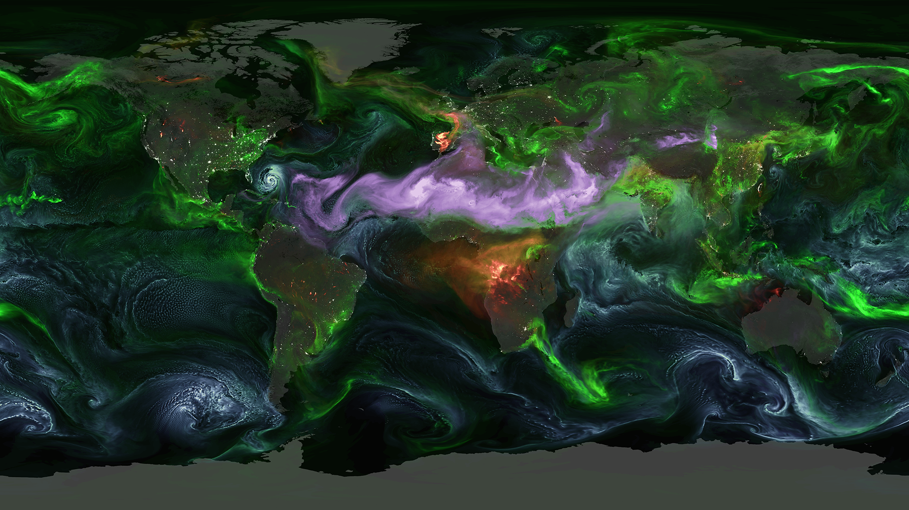
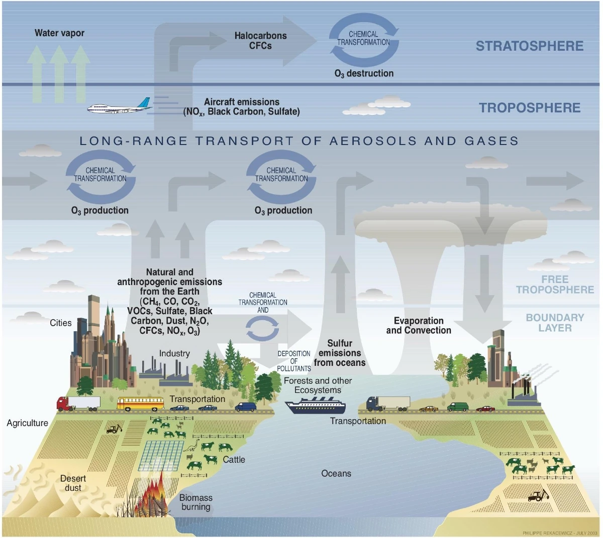
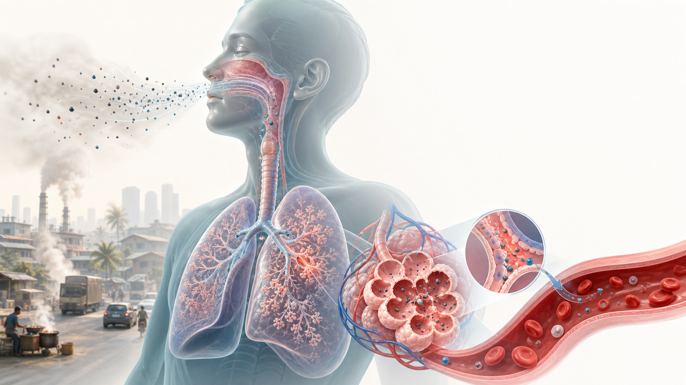
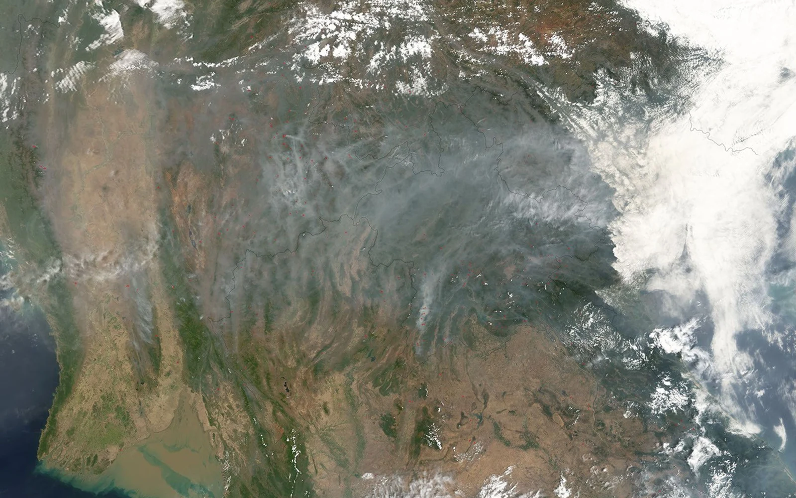
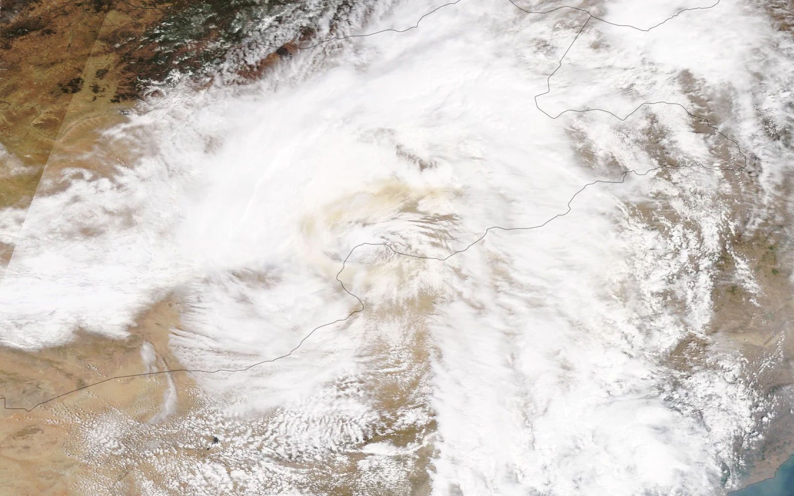
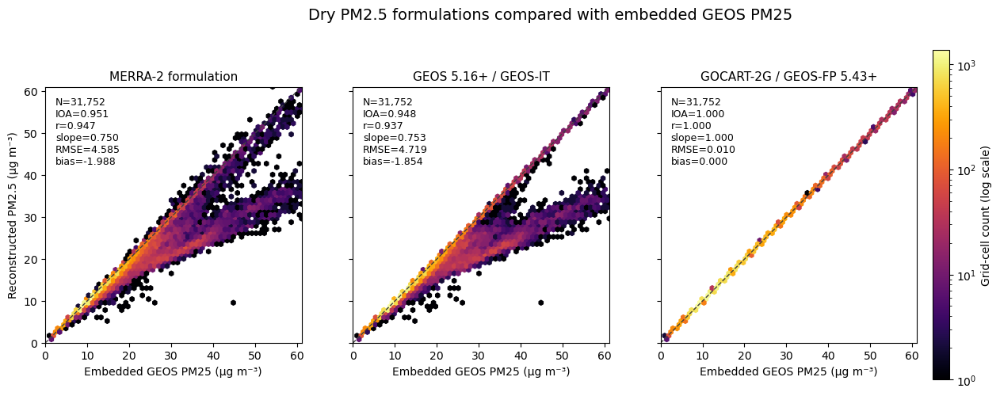

This session introduces NASA GEOS-FP, its aerosol and PM2.5 diagnostics, major sources of uncertainty, and the role of local performance evaluation.
Technical Training on GEOS Data for Air Quality Monitoring in Lao PDR
View the GEOS-FP forecast

Global atmospheric analyses and forecasts informed by observations.NASA GEOS aerosol visualization: sea salt (blue), dust (magenta), smoke (orange/red), sulfate (green).
NASA Global Modeling and Assimilation Office
GEOS provides a global, observation-informed view of the evolving Earth system.
GEOSNASA's modeling and data-assimilation framework for the Earth system.
GEOS-FPThe near-real-time Forward Processing analysis and forecast product used in this assessment.
GEOS-CFA composition-focused GEOS configuration with a different chemical scope and product specification.
Meteorological forcing and chemical boundary conditions are distinct model inputs.

Atmospheric composition processes represented by chemistry and transport models. U.S. Climate Change Science Program; illustration by Philippe Rekacewicz (2003), reproduced in the NSF NCAR CESM Tutorial 2024.
01
Weather sourceGEOS-FP / MERRA-2Winds, temperature, moisture, pressure, and land fields
→
PreprocessingRegridding + interpolationTransform fields to the regional grid and vertical coordinate
→
Regional modelWRF / NU-WRFMeteorological initial state and lateral boundaries
02
Meteorological driverGEOS meteorologyGEOS-FP, MERRA-2, or GEOS-IT
→
Process representationTransport + chemistryMixing, convection, emissions, reactions, and deposition
→
Offline CTMGEOS-ChemWeather is driven by GEOS; chemistry uses its own restart
03
Chemical sourceGlobal chemistry runThree-dimensional species concentrations
→
PreprocessingSpecies mappingReconcile mechanisms, units, grids, and vertical coordinates
→
Regional chemistryNested CTM / WRF-GCChemical restart and species boundaries
!Technical distinction: meteorological forcing and chemical boundary conditions require different preprocessing and compatible model states.
GEOS products differ in purpose, temporal coverage, and forecast horizon.
GEOS frameworkObservations, data assimilation, and Earth-system modeling provide the common foundation; each product has a distinct configuration and data record.
19801998NOW5 DAYS9 MONTHS
MERRA-2Retrospective atmospheric reanalysis
Consistent long-term record1980 → near present
GEOS-ITInstrument-team analysis
Stable retrieval support1998 → present
GEOS-FPNear-real-time analysis and forecast
Meteorology and aerosolshours → days
GEOS-CFAtmospheric composition forecast
Detailed gas and aerosol compositionanalysis + 5 days
GEOS-S2S-3Subseasonal-to-seasonal prediction
Coupled ensemble predictionweeks → 9 months
GEOS-ChemOffline community chemical transport model
PM2.5 is defined by aerodynamic diameter and comprises multiple chemical species.
2.5micrometers or smaller
PM2.5 is defined by aerodynamic diameter rather than chemical composition. It comprises solid particles and liquid droplets from direct emissions and secondary atmospheric formation.
Ambient concentrationPM2.5 mass concentration is commonly reported in micrograms per cubic meter of air (µg/m³).
Chemical compositionParticle size, composition, and source influence atmospheric behavior and health effects.
Inhaled fine particles can initiate respiratory and systemic biological responses.

01
InhalationFine particles can penetrate beyond the upper airway and reach the lower respiratory tract.
02
Alveolar depositionParticles and associated compounds interact with the lung surface, contributing to oxidative stress and inflammation.
03
Systemic responseInflammatory and oxidative pathways can affect the cardiovascular system; translocation is most relevant to smaller particle fractions.
Conceptual pathway; anatomy and particle transport are simplified for instruction.
Population exposure to PM2.5 is associated with substantial global disease burden.
4.2Mpremature deaths
WHO estimate attributable to ambient air pollution worldwide in 2019, primarily through fine-particle-related cardiovascular, respiratory, and cancer outcomes.
99%of the global population
Lived in places where WHO air-quality guideline levels were not met in 2019.
5 / 15µg/m³ WHO PM2.5 guidance
5 annual mean and 15 24-hour mean. These are health-based guideline values, not a line between zero and non-zero risk.
CardiovascularIschaemic heart disease, vascular effects, and stroke
RespiratoryAsthma exacerbation, infection, COPD, and impaired lung function
CancerOutdoor air pollution and particulate matter are classified as carcinogenic
DevelopmentPregnancy and childhood are important windows of vulnerability
EquityExposure and health burden are not distributed evenly
Higher-risk groups:childrenpregnant peopleolder adultspeople with cardiorespiratory diseaseoutdoor workers
PM2.5 connects local sources to regional smoke, haze, and dust episodes.

Smoke and haze over mainland Southeast AsiaRed fire detections and gray smoke reveal many local burns merging into a regional plume. NASA Terra MODIS, 30 March 2005.

Asian dust lofted above the boundary layerOnce mineral dust reaches faster free-tropospheric winds, its fine fraction can travel far beyond the source region. NASA Terra MODIS, 12 May 2019.
01 · Local generationCombustion and wind create primary particles.Fires emit organic aerosol and black carbon. Strong winds lift exposed soil; only the fine dust fraction contributes to PM2.5.
02 · Atmospheric formationGases react and condense onto particles.Oxidation of VOCs, SO₂, and NOₓ contributes to secondary organic aerosol, sulfate, nitrate, and ammonium.
03 · Accumulation and transportTerrain and weather determine plume scale.Shallow mixing and valleys favor local buildup; winds and convection carry aged aerosol across provinces and national borders.
04 · Effects beyond exposureParticles alter visibility and the Earth system.Haze reduces visibility; aerosols modify radiation and clouds; wet and dry deposition transfers material to land and water.
ScaleA source may be local, but the resulting PM2.5 episode is controlled by chemistry, boundary-layer depth, terrain, wind, convection, and precipitation. Regional evaluation is therefore essential for Lao PDR and neighboring countries.
Examine the spatial and temporal evolution of forecast PM2.5 and near-surface wind.
GEOS-FP PM2.5 forecast
--global mean
--global p99
0153555100150+
VALID TIME
Loading forecast...
+1.5h+4.5h+7.5h+10.5h+13.5h+16.5h+19.5h+22.5h
Hover for PM2.5 · animated trails show 10 m wind
Hands-on · Modules 0 and 1
Set up Colab, then acquire and verify one operational forecast.
Today ends with a validated Southeast Asia GEOS-FP subset. Analysis begins later in Module 2.
Open ColabConnect to a hosted Python runtime in the browser.
PrepareInstall NetCDF support and upload the small support bundle.
ConnectOpen the live GEOS-FP aerosol collection through OPeNDAP.
MapPlot native GEOS PM2.5 globally with Cartopy.
SubsetChoose a BBOX, dates, and aerosol variables, then save NetCDF.
ObserveRetrieve matching reference-monitor PM2.5 from OpenAQ.
Module 0 · Google Colab Setup
No Conda installation. Start from the same hosted runtime.
Google Colab · browser workflow
1. Open Google Colab
colab.research.google.com
2. Upload the setup notebook
File → Upload notebook
00_module0_google_colab_setup.ipynb
3. Connect and run
Runtime → Connect to hosted runtime
Runtime → Run all
1
Hosted PythonNo local Python, Conda, compiler, or administrator access required.
2
Shared workspaceAll notebooks use the cloned GEOS_Air_Quality_Training_Bangkok_2026 repository.
3
Support bundleUpload day1_colab_support_files.zip when Module 0 asks.
4
OpenAQ accessRegister for an API key at explore.openaq.org before Module 1.
First see the global field; then decide where to focus.
remote GEOS-FP dataset
└── PM25
├── one valid time
├── all longitudes
└── all latitudes
Cartopy
├── Robinson projection
├── coastlines + borders
└── 99th-percentile color cap
1
Load one sliceDo not transfer the full time series for a first-look map.
2
Project explicitlyData coordinates remain Plate Carrée; the display uses Robinson.
3
Read patternsIdentify broad aerosol transport, source regions, and background conditions.
ValidateThe notebook checks coordinate order, variable availability, and valid-time bounds.
2
Transferxarray and OPeNDAP request only selected cells from the remote server.
3
TraceThe output records source URL, UTC interval, and BBOX in NetCDF attributes.
4
Map againCartopy renders the saved regional subset at its true geographic extent.
Module 1 · PM2.5 Reconstruction
One name, three aerosol generations, three different sums.

Live Southeast Asia subset · common 1:1 axes · N, IOA, r, slope, RMSE, and mean bias computed from every finite grid cell and time.
What changed. MERRA-2 omits nitrate, ammonium, and brown carbon; GEOS 5.16+ adds nitrate and ammonium; GOCART-2G also adds brown carbon and reproduces embedded dry PM25 almost exactly. The legacy formulas underpredict here by about 1.9 µg/m³ with slopes near 0.75.
Participants edit one configuration cell for BBOX, UTC dates, and aerosol variables.An OpenAQ API key is entered privately at runtime and is never saved in the notebook.
Module 1 · Checkpoint
Finish with two traceable datasets and one combined map.
GEOS NetCDFSelected aerosol variables, BBOX, and valid times.
Station CSVOpenAQ reference-monitor locations and sensor metadata.
Hourly CSVMatching UTC PM2.5 observations with station identifiers.
Regional mapCartopy GEOS field with station observations shown as circles.
ProvenanceURLs, units, UTC dates, provider, owner, and coordinates retained.
End of Day 1 scope. Module 1 stops before collocation, temporal averaging, statistics, or model evaluation.